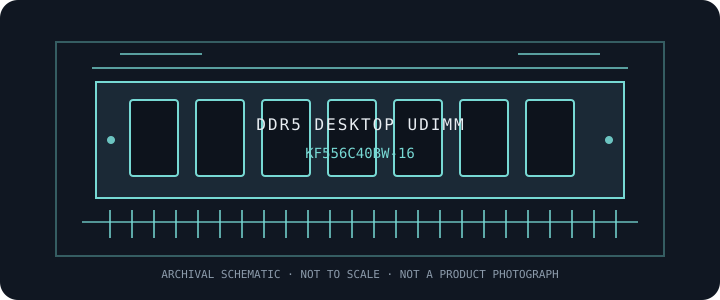

[ MANUFACTURER MODEL // MEMORY / RAM ]
Kingston FURY KF556C40BW-16
Kingston FURY Beast DDR5 desktop UDIMM, part KF556C40BW-16; 16 GB at DDR5-5600 and CL40. This product record describes the manufacturer's identified kit or module; it does not imply qualification for every DDR desktop platform.

EXACT ID: Kingston FURY KF556C40BW-16. Confirm the complete label, suffix, SPD, and revision before service or compatibility decisions; retail families may contain electrically different variants.
Model specifications
| Manufacturer / part ID | Kingston FURY KF556C40BW-16 |
|---|---|
| Module class / form factor | DDR5 desktop UDIMM; 288-pin; unbuffered, non-ECC. Single desktop module. |
| Capacity / package | 16 GB single module |
| Data rate / bandwidth class | 5600 MT/s (PC5-44800) |
| Primary timings | CL40-40-40 at rated profile. Secondary timings and SPD contents are revision- and profile-specific; consult the exact kit label and SPD. |
| Voltage / profile | 1.25 V at rated XMP profile (JEDEC DDR5-4800 default: CL40-39-39 at 1.1 V); JEDEC default is DDR5-4800 CL40-39-39 at 1.1 V; Intel XMP 3.0 profile enables DDR5-5600 CL40-40-40 at 1.25 V on a compatible host. |
| ECC / buffering | Unbuffered, non-ECC at the system interface. DDR5 on-die ECC corrects internal DRAM-array errors and is not equivalent to end-to-end system ECC. |
| Compatibility | Desktop DDR5 288-pin UDIMM hosts only. This module class is unbuffered and non-ECC at the system interface; DDR5 on-die ECC (where applicable) is not host-visible ECC. A motherboard slot and CPU must support DDR5, the capacity and organization, and the intended profile/data rate. JEDEC default is DDR5-4800 CL40-39-39 at 1.1 V; Intel XMP 3.0 profile enables DDR5-5600 CL40-40-40 at 1.25 V on a compatible host. |
Compatibility, service & archive notes
- Desktop DDR5 288-pin UDIMM hosts only. This module class is unbuffered and non-ECC at the system interface; DDR5 on-die ECC (where applicable) is not host-visible ECC. A motherboard slot and CPU must support DDR5, the capacity and organization, and the intended profile/data rate. JEDEC default is DDR5-4800 CL40-39-39 at 1.1 V; Intel XMP 3.0 profile enables DDR5-5600 CL40-40-40 at 1.25 V on a compatible host.
- DDR4 and DDR5 use different electrical interfaces and keyed sockets; a shared 288-pin DIMM count does not make them interchangeable. Never force a module into a slot.
- Advertised profile rates may exceed a processor's official memory specification. The system may train at a lower rate depending on CPU, board topology, BIOS, module ranks, and installed population.
- Power off and follow the host service manual before installation. Use ESD precautions, hold the module by its edges, and follow the board's recommended paired-slot order.
Preservation record
Photograph the complete product label, save a read-only SPD dump, record module revision and host slot, and note CPU, motherboard, firmware, configured frequency/timings, voltage, test method, and any errors observed.
Manufacturer & standards references
- Kingston FURY — KF556C40BW-16 manufacturer datasheetPrimary product reference. Record the exact suffix and revision from the physical module or package; availability of a product page can vary by region.
- JEDEC JESD79-5 — DDR5 SDRAMJEDEC generation standard for interface and device context; it does not certify compatibility with a specific host or guarantee the module's rated profile.
For final qualification, consult the exact motherboard and processor documentation and supported-memory list. The installed specimen's label and SPD remain authoritative for revision-specific behavior.